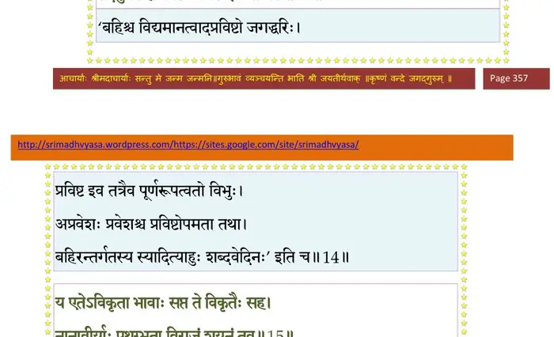
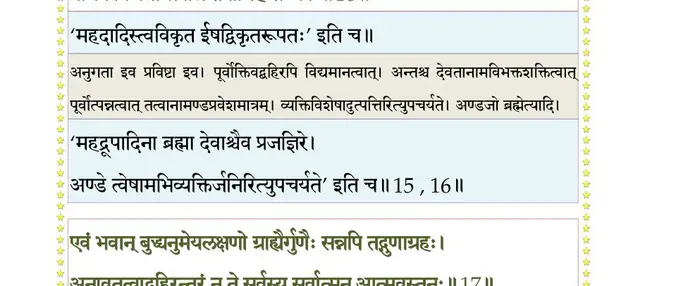
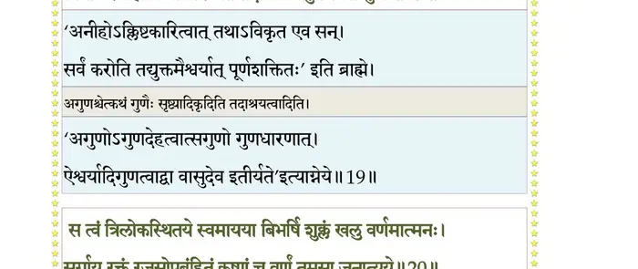
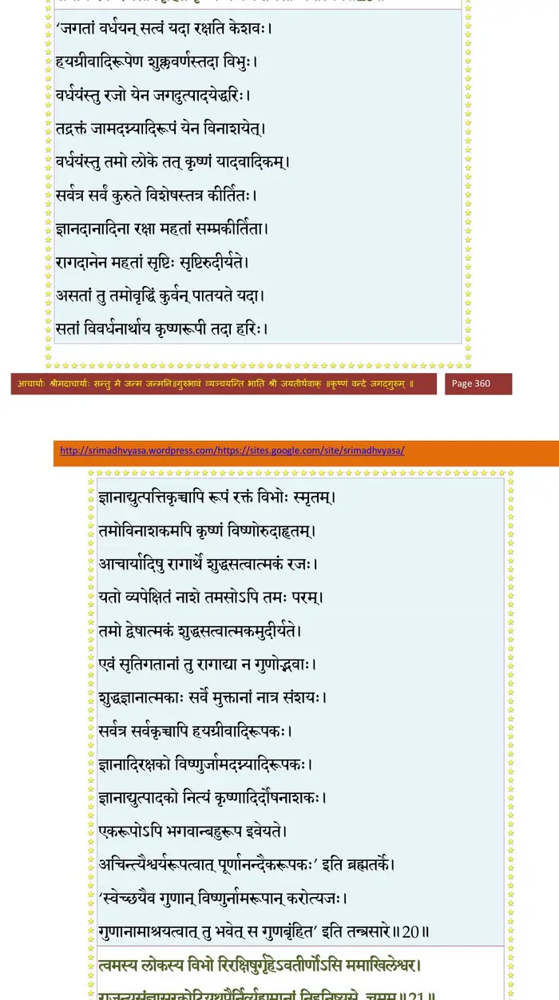
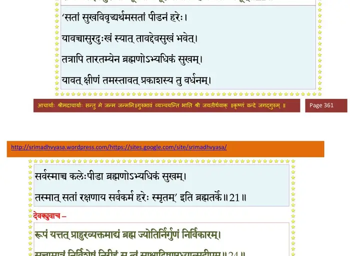
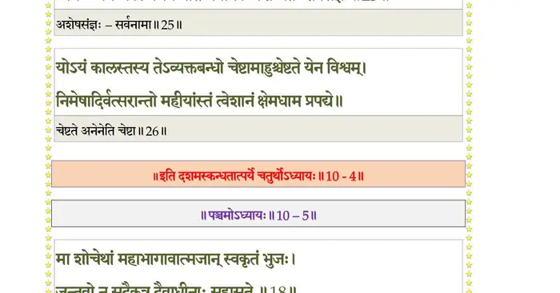

स्कन्ध 10 · अध्याय 4
श्लोक १
श्रीशुक उवाच–
अथ सर्वगुणोपेतः कालः परमशोभनः ।
यर्ह्येवाजनजन्मर्क्षः शान्तर्क्षग्रहतारकः ।। १ ।।
अथ सर्वगुणोपेतः कालः परमशोभनः ।
यर्ह्येवाजनजन्मर्क्षः शान्तर्क्षग्रहतारकः ।। १ ।।
श्लोक २
दिशः प्रसेदुर्गगनं निर्मलोडुगणोदयम् ।
मही मङ्गलभूयिष्ठा पुरग्रामव्रजाकरा ।। २ ।।
मही मङ्गलभूयिष्ठा पुरग्रामव्रजाकरा ।। २ ।।
श्लोक ३
नद्यः प्रसन्नसलिला हृदा जलरुहश्रियः ।
द्विजालिकुसन्नादस्तबका वनराजयः ।। ३ ।।
द्विजालिकुसन्नादस्तबका वनराजयः ।। ३ ।।
श्लोक ४
ववौ वायुः सुखस्पर्शः पुण्यगन्धवहः शुचिः ।
अग्नयश्च द्विजातीनां शान्तास्तत्र समिन्धत ।। ४ ।।
अग्नयश्च द्विजातीनां शान्तास्तत्र समिन्धत ।। ४ ।।
श्लोक ५
मनांस्यासन् प्रसन्नानि साधूनामसुरद्रुहाम् ।
जायमानेऽजने तस्मिन् नेदुर्दुन्दभयो दिवि ।। ५ ।।
जायमानेऽजने तस्मिन् नेदुर्दुन्दभयो दिवि ।। ५ ।।
श्लोक ६
जगुः किन्नरगन्धर्वास्तुष्टुवुः सिद्धचारणाः ।
विद्याधराश्च ननृतुरप्सरोभिः समं मुदा ।। ६ ।।
विद्याधराश्च ननृतुरप्सरोभिः समं मुदा ।। ६ ।।
श्लोक ७
मुमुचुर्मुनयो देवाः सुमनांसि मुदान्विताः ।
मन्दं मन्दं जलधरा जगर्जुरनुसागरम् ।। ७ ।।
मन्दं मन्दं जलधरा जगर्जुरनुसागरम् ।। ७ ।।
श्लोक ८
निशीथे तम उद्भूते जायमाने जनार्दने ।
देवक्यां देवरूपिण्यां विष्णुः सर्वगुहाश्रयः ।। ८ ।।
देवक्यां देवरूपिण्यां विष्णुः सर्वगुहाश्रयः ।। ८ ।।
श्लोक ९
प्रादुरासीद् यथा प्राच्यां दिशीन्दुरिव पुष्कलः ।। ९ ।।
श्लोक १०
तमद्भुतं बालकमम्बुजेक्षणं चतुर्भुजं शङ्खगदाद्युदायुधम् ।
श्रीवत्सलक्ष्मं गलशोभिकौस्तुभं पीताम्बरं सान्द्रपयोदसौभगम् ।।१०।।
श्रीवत्सलक्ष्मं गलशोभिकौस्तुभं पीताम्बरं सान्द्रपयोदसौभगम् ।।१०।।
श्लोक ११
महार्हवैढूर्यकिरीटकुण्डत्विषा परिष्वक्तसहस्रकुन्तलम् ।
उद्दामकाञ्च्यङ्गदकङ्कणादिभिविरोचमानं वसुदेव ऐक्षत।। ११ ।।
उद्दामकाञ्च्यङ्गदकङ्कणादिभिविरोचमानं वसुदेव ऐक्षत।। ११ ।।
श्लोक १३
स विस्मयोत्फुल्लविलोचनो हरिं सुतं विलोक्यानकदुन्दुभिस्तदा ।
कृष्णावतारोत्सवसम्भ्रमोऽस्पृशन् मुदा द्विजेभ्योऽयुतमाप्लुतो गवाम् ।।
अथैनमस्तौदवधार्य पूरुषं परं नताङ्गः कृतधीः कृताञ्जलिः ।
स्वरोचिषा भारत सूतिकागृहं विरोचयन्तं गतभीः प्रभाववित्।।१३।।
कृष्णावतारोत्सवसम्भ्रमोऽस्पृशन् मुदा द्विजेभ्योऽयुतमाप्लुतो गवाम् ।।
अथैनमस्तौदवधार्य पूरुषं परं नताङ्गः कृतधीः कृताञ्जलिः ।
स्वरोचिषा भारत सूतिकागृहं विरोचयन्तं गतभीः प्रभाववित्।।१३।।
श्लोक १४
वसुदेव उवाच–
विदितोऽसि भवान् साक्षात् पुरुषः प्रकृतेः परः ।
केवलानुभवानन्दस्वरूपः सर्वबुद्धिदृक् ।। १४ ।।
विदितोऽसि भवान् साक्षात् पुरुषः प्रकृतेः परः ।
केवलानुभवानन्दस्वरूपः सर्वबुद्धिदृक् ।। १४ ।।
भागवततात्पर्यनिर्णय

श्लोक १५
स एव स्वप्रकृत्येदं सृष्ट्वाऽग्रे त्रिगुणात्मकम् ।
तदनु त्वं ह्यप्रविष्टः प्रविष्टः इव भाव्यसे ।। १५ ।।
तदनु त्वं ह्यप्रविष्टः प्रविष्टः इव भाव्यसे ।। १५ ।।
श्लोक १६
य एतेऽविकृता भावाः सप्त ते विकृतैः सह ।
नानावीर्याः पृथग्भूता विराजं शयनं तव ।। १६ ।।
नानावीर्याः पृथग्भूता विराजं शयनं तव ।। १६ ।।
भागवततात्पर्यनिर्णय
श्लोक १७
सन्निपत्य समुत्पाद्य दृश्यन्तेऽनुगता इव ।
प्रागेव विद्यमानत्वान्न तेषामिह सम्भवः ।। १७ ।।
प्रागेव विद्यमानत्वान्न तेषामिह सम्भवः ।। १७ ।।
भागवततात्पर्यनिर्णय

श्लोक २०
एवं भवान् बुद्ध्यनुमेयलक्षणो ग्राह्यैर्गुणैः सन्नपि तद्गुणाग्रहः ।
अनावृतत्वाद् बहिरन्तरं न ते सर्वस्य सर्वात्मन आत्मवस्तुनः ।।१८
यदात्मनो दृश्यगुणेषु सन्निधेर्व्यवस्यसेऽस्वव्यतिरेकतोऽबुधैः ।
विनाऽनुवादं न च तन्मनीषितं सम्यग् वचो व्यक्तमुपादत्पुमान्।।
त्वत्तोऽस्य जन्मस्थितिसंयमान् विभो वदन्त्यनीहादगुणादविक्रियात् ।
त्वयीश्वरे ब्रह्मणि नो विरुध्यते तदाश्रयत्वादुपचर्यसे गुणैः ।। २० ।।
अनावृतत्वाद् बहिरन्तरं न ते सर्वस्य सर्वात्मन आत्मवस्तुनः ।।१८
यदात्मनो दृश्यगुणेषु सन्निधेर्व्यवस्यसेऽस्वव्यतिरेकतोऽबुधैः ।
विनाऽनुवादं न च तन्मनीषितं सम्यग् वचो व्यक्तमुपादत्पुमान्।।
त्वत्तोऽस्य जन्मस्थितिसंयमान् विभो वदन्त्यनीहादगुणादविक्रियात् ।
त्वयीश्वरे ब्रह्मणि नो विरुध्यते तदाश्रयत्वादुपचर्यसे गुणैः ।। २० ।।
भागवततात्पर्यनिर्णय

श्लोक २१
सत्त्वं त्रिलोकस्थितये स्वमायया बिभर्षि शुक्लं खलु वर्णमात्मनः ।
सर्गाय रक्तं रजसोपबृहितं कृष्णं च वर्णं तमसा जनात्यये ।। २१ ।।
सर्गाय रक्तं रजसोपबृहितं कृष्णं च वर्णं तमसा जनात्यये ।। २१ ।।
भागवततात्पर्यनिर्णय

श्लोक २२
त्वमस्य लोकस्य विभो रिरक्षिषुर्गृहेऽवतीर्णोऽसि ममाखिलेश्वर ।
राजन्यसंज्ञासुरकोटियूथपैर्निर्व्यूह्यमानां निहनिष्यसे चमूम् ।। २२ ।।
राजन्यसंज्ञासुरकोटियूथपैर्निर्व्यूह्यमानां निहनिष्यसे चमूम् ।। २२ ।।
भागवततात्पर्यनिर्णय

श्लोक २३
अयं तमस्यस्तव जन्म मे गृहे श्रुत्वाऽग्रजांस्ते न्यहनत् सुरेश्वर ।
स तेऽवतारं पुरुषैः समर्पितं श्रुत्वाऽधुनैवाभिसरत्युदायुधः ।। २३ ।।
स तेऽवतारं पुरुषैः समर्पितं श्रुत्वाऽधुनैवाभिसरत्युदायुधः ।। २३ ।।
श्लोक २४
श्रीशुक उवाच–
अथैनमात्मजं वीक्ष्य महापुरुषलक्षणम् ।
देवकी तमुपाधावत् कंसाद् भीता शुचिस्मिता ।। २४ ।।
अथैनमात्मजं वीक्ष्य महापुरुषलक्षणम् ।
देवकी तमुपाधावत् कंसाद् भीता शुचिस्मिता ।। २४ ।।
श्लोक २६
रूपं यत् तत् प्राहुरव्यक्तमाद्यं ब्रह्म ज्योतिर्निर्गुणं निर्विकारम् ।
सत्तामात्रं निर्विशेषं निरीहं स त्वं साक्षाद् विष्णुरध्यात्मदीपम् ।। २५
नष्टे लोके द्विपरार्धावसाने महाभूतेष्वादिभूतं गतेषु ।
व्यक्तेऽव्यक्तं कालवेगेन याते भवानेकः शिष्यतेऽशेषसंज्ञः।। २६ ।।
सत्तामात्रं निर्विशेषं निरीहं स त्वं साक्षाद् विष्णुरध्यात्मदीपम् ।। २५
नष्टे लोके द्विपरार्धावसाने महाभूतेष्वादिभूतं गतेषु ।
व्यक्तेऽव्यक्तं कालवेगेन याते भवानेकः शिष्यतेऽशेषसंज्ञः।। २६ ।।
भागवततात्पर्यनिर्णय

श्लोक २७
योऽयं कालस्तस्य तेऽव्यक्तबन्धो चेष्टामाहुश्चेष्टते येन विश्वम् ।
निमेषादिर्वत्सरान्तो महीयांस्तं त्वेशानं क्षेमधाम प्रपद्ये।। २७ ।।
निमेषादिर्वत्सरान्तो महीयांस्तं त्वेशानं क्षेमधाम प्रपद्ये।। २७ ।।
श्लोक २९
मर्त्यो मृत्युव्यालभीतः पलायन् लोकान् सर्वान् निर्भयं नाध्यगच्छत् ।
त्वत्पादाब्जं प्राप्य यदृच्छयाऽऽद्य स्वस्थः शेते मृत्युरस्मादपैति ।। २८
स त्वं घोरादुग्रसेनात्मजान् नस्त्राहि त्रस्तान् भृत्यवित्रासहाऽसि ।
रूपं चेदं पौरुषं ध्यानधिष्ण्यम् प्रत्यक्षं मादृशां त्वं कृषीष्ठाः।। २९ ।।
त्वत्पादाब्जं प्राप्य यदृच्छयाऽऽद्य स्वस्थः शेते मृत्युरस्मादपैति ।। २८
स त्वं घोरादुग्रसेनात्मजान् नस्त्राहि त्रस्तान् भृत्यवित्रासहाऽसि ।
रूपं चेदं पौरुषं ध्यानधिष्ण्यम् प्रत्यक्षं मादृशां त्वं कृषीष्ठाः।। २९ ।।
श्लोक ३०
जन्म ते मय्यसौ पापो मा विद्यान्मधुसूदन ।
समुद्विजे भवद्धेतोः कंसादहमधीरधीः ।। ३० ।।
समुद्विजे भवद्धेतोः कंसादहमधीरधीः ।। ३० ।।
श्लोक ३१
उपसंहर विश्वात्मन्नदो रूपमलौकिकम् ।
शङ्खचक्रगदापद्मश्रिया जुष्टं चतुर्भुजम् ।। ३१ ।।
शङ्खचक्रगदापद्मश्रिया जुष्टं चतुर्भुजम् ।। ३१ ।।
श्लोक ३३
विश्वं यदेतत् स्वतनौ निशान्ते यथावकाशं पुरुषः परो भवान् ।
बिभर्ति सोऽयं मम गर्भगोऽभूदहो नृलोकस्य विडम्बनं महत्।। ३२
श्रीभगवानुवाच–
त्वमेव पूर्वसर्गेऽभूः पृश्निः स्वायम्भुवे सति ।
तदाऽयं सुतपा नाम प्रजापतिरकल्मषः ।। ३३ ।।
बिभर्ति सोऽयं मम गर्भगोऽभूदहो नृलोकस्य विडम्बनं महत्।। ३२
श्रीभगवानुवाच–
त्वमेव पूर्वसर्गेऽभूः पृश्निः स्वायम्भुवे सति ।
तदाऽयं सुतपा नाम प्रजापतिरकल्मषः ।। ३३ ।।
श्लोक ३४
युवां वै ब्रह्मणाऽऽदिष्टौ प्रजासर्गे यदा ततः ।
सन्नियम्येन्द्रियग्रामं तेपाथे परमं तपः ।। ३४ ।।
सन्नियम्येन्द्रियग्रामं तेपाथे परमं तपः ।। ३४ ।।
श्लोक ३५
वर्षवातातपहिमघर्मकालगुणाननु ।
सहमानौ श्वासरोधविनिर्धूतमनोमलौ ।। ३५ ।।
सहमानौ श्वासरोधविनिर्धूतमनोमलौ ।। ३५ ।।
श्लोक ३६
शीर्णपर्णानिलाहारावुपशान्तेन चेतसा ।
मत्तः कामानभीप्सन्तौ मदाराधनमीहतुः ।। ३६ ।।
मत्तः कामानभीप्सन्तौ मदाराधनमीहतुः ।। ३६ ।।
श्लोक ३७
एवं वां तप्यतोर्भद्रे तपः परमदुष्करम् ।
दिव्यवर्षसहस्राणि द्वादशेयुर्मदात्मनोः ।। ३७ ।।
दिव्यवर्षसहस्राणि द्वादशेयुर्मदात्मनोः ।। ३७ ।।
श्लोक ३८
तदा वां परितुष्टोऽहममुना वपुषाऽनघे ।
तपसा श्रद्धया नित्यं भक्त्या च हृदि भावितः ।। ३८ ।।
तपसा श्रद्धया नित्यं भक्त्या च हृदि भावितः ।। ३८ ।।
श्लोक ३९
प्रादुरासं वरदराड् युवयोः कामदित्सया ।
व्रियतां वर इत्युक्ते मादृशो वां वृतः सुतः ।। ३९ ।।
व्रियतां वर इत्युक्ते मादृशो वां वृतः सुतः ।। ३९ ।।
श्लोक ४०
अजुष्टग्राम्यविषयावनपत्यौ च दम्पती ।
न वव्राथेऽपवर्गं मे मोहितौ मम मायया ।। ४० ।।
न वव्राथेऽपवर्गं मे मोहितौ मम मायया ।। ४० ।।
श्लोक ४१
गते मयि युवां लब्ध्वा वरं मत्सदृशं सुतम् ।
ग्राम्यान् भोगानभुञ्जाथां युवां प्राप्तमनोरथौ ।। ४१ ।।
ग्राम्यान् भोगानभुञ्जाथां युवां प्राप्तमनोरथौ ।। ४१ ।।
श्लोक ४२
अदृष्ट्वाऽन्यतमं लोके शीलौदार्यगुणैः समम् ।
अहं सुतो वामभवं पृश्निगर्भ इति स्मृतः ।। ४२ ।।
अहं सुतो वामभवं पृश्निगर्भ इति स्मृतः ।। ४२ ।।
श्लोक ४३
तयोर्वां पुनरेवाहमदित्यामास कश्यपात् ।
उपेन्द्र इति विख्यातो वामनत्वाच्च वामनः ।। ४३ ।।
उपेन्द्र इति विख्यातो वामनत्वाच्च वामनः ।। ४३ ।।
श्लोक ४४
तृतीयेऽस्मिन् भवेऽहं वै तेनैव वपुषाऽनघे ।
जातो भूयस्तयोरेवं सत्यं मे व्याहृतं सति ।। ४४ ।।
जातो भूयस्तयोरेवं सत्यं मे व्याहृतं सति ।। ४४ ।।
श्लोक ४५
एतद् वां दर्शितं रूपं प्राग्जन्मस्मरणाय मे ।
नान्यथा मद्भवज्ञानं मर्त्यलिङ्गेन जन्यते ।। ४५ ।।
नान्यथा मद्भवज्ञानं मर्त्यलिङ्गेन जन्यते ।। ४५ ।।
श्लोक ४६
युवां मां पुत्रभावेन ब्रह्मभावेन चासकृत् ।
चिन्तयन्तौ कृतस्नेहौ यास्येथे मद्गतिं पराम् ।। ४६ ।।
चिन्तयन्तौ कृतस्नेहौ यास्येथे मद्गतिं पराम् ।। ४६ ।।
श्लोक ४७
शुक उवाच–
इत्युक्त्वाऽऽसीद् हरिस्तूष्णीं भगवानात्ममायया ।
पित्रोः सम्पश्यतोः सद्यो बभूव प्राकृतः शिशुः ।। ४७ ।।
इत्युक्त्वाऽऽसीद् हरिस्तूष्णीं भगवानात्ममायया ।
पित्रोः सम्पश्यतोः सद्यो बभूव प्राकृतः शिशुः ।। ४७ ।।
श्लोक ४८
ततश्च शौरिर्भगवत्प्रचोदितः सुतं समादाय स सूतिकागृहात् ।
यदा बहिर्गन्तुमियेष तर्ह्यजा या योगमायाऽजनि नन्दजायया।।४८।।
यदा बहिर्गन्तुमियेष तर्ह्यजा या योगमायाऽजनि नन्दजायया।।४८।।
श्लोक ४९
तया हृतप्रत्ययसर्ववृत्तिषु द्वाःस्थेषु पौरेषु च यापितेष्वथ ।
द्वारस्तु सर्वाः पिहिता दुरत्ययाः बृहत्कपाटायसकीलशृङ्खलैः।। ४९ ।।
द्वारस्तु सर्वाः पिहिता दुरत्ययाः बृहत्कपाटायसकीलशृङ्खलैः।। ४९ ।।
श्लोक ५१
ताः कृष्णवाहे वसुदेव आगते स्वयं व्यशीर्यन्त यथा तमो रवेः ।
ववर्ष पर्जन्य उपांशुगर्जितः शेषोऽन्वगाद् वारि निवारयन् फणैः।।
मघोनि वर्षत्यसकृद् यमानुजा गम्भीरतोयौघजवोर्मिफेनिला ।
भयानकावर्तशताकुला नदी मार्गं ददौ सिन्धुरिव श्रियः पतेः ।।५१।।
ववर्ष पर्जन्य उपांशुगर्जितः शेषोऽन्वगाद् वारि निवारयन् फणैः।।
मघोनि वर्षत्यसकृद् यमानुजा गम्भीरतोयौघजवोर्मिफेनिला ।
भयानकावर्तशताकुला नदी मार्गं ददौ सिन्धुरिव श्रियः पतेः ।।५१।।
श्लोक ५२
नन्दव्रजं शौरिरुपेत्य तत्र तान् गोपान् सुषुप्तानुपलभ्य निद्रया ।
शिशुं यशोदाशयने निधाय तत्सुतामुपादाय पुनर्गृहानगात् ।। ५२ ।।
शिशुं यशोदाशयने निधाय तत्सुतामुपादाय पुनर्गृहानगात् ।। ५२ ।।
श्लोक ५३
देवक्याः शयने न्यस्य वसुदेवोऽथ दारिकाम् ।
प्रतिमुच्य पदोर्लोहमास्ते पूर्ववदावृतः ।। ५३ ।।
प्रतिमुच्य पदोर्लोहमास्ते पूर्ववदावृतः ।। ५३ ।।
श्लोक ५४
यशोदा नन्दपत्नी च जातं परमबुध्यत ।
न तल्लिङ्गं परिश्रान्ता निद्रयाऽपगतस्मृतिः ।। ५४ ।।
न तल्लिङ्गं परिश्रान्ता निद्रयाऽपगतस्मृतिः ।। ५४ ।।
।। इति श्रीमद्भागवते दशमस्कन्धे चतुर्थोऽध्यायः ।।